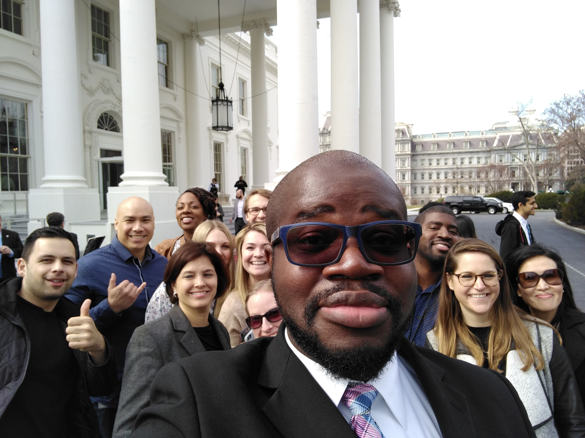
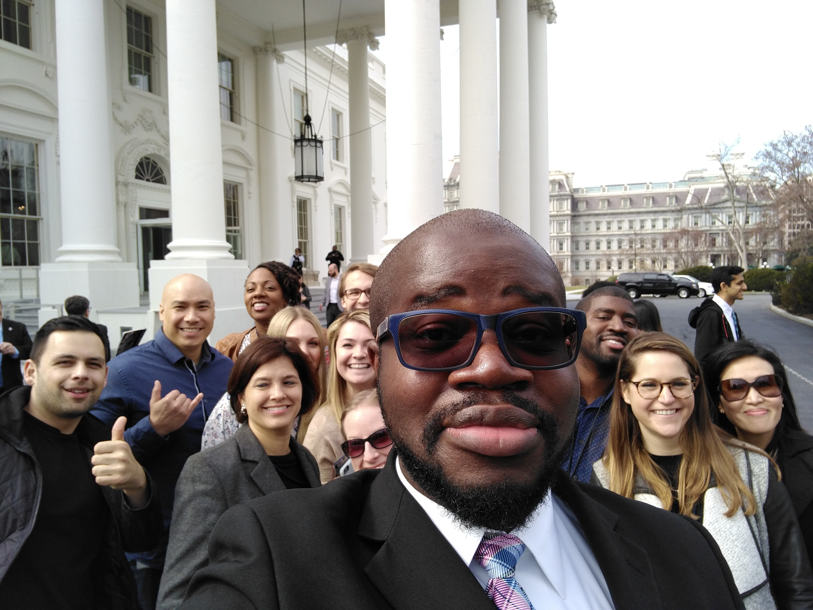
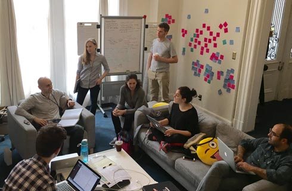
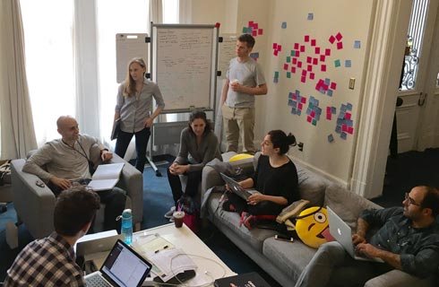

Solving big problems
Millions of Americans interact with government services every day. Veterans apply for benefits. Students compare financial aid options. Small businesses seek loans. Too often, outdated tools and systems make these interactions cumbersome and frustrating.
Enter the U.S. Digital Service. We pair the country’s top technology talent with the best public servants to improve the usefulness and reliability of the government's most important digital services.


 



 
